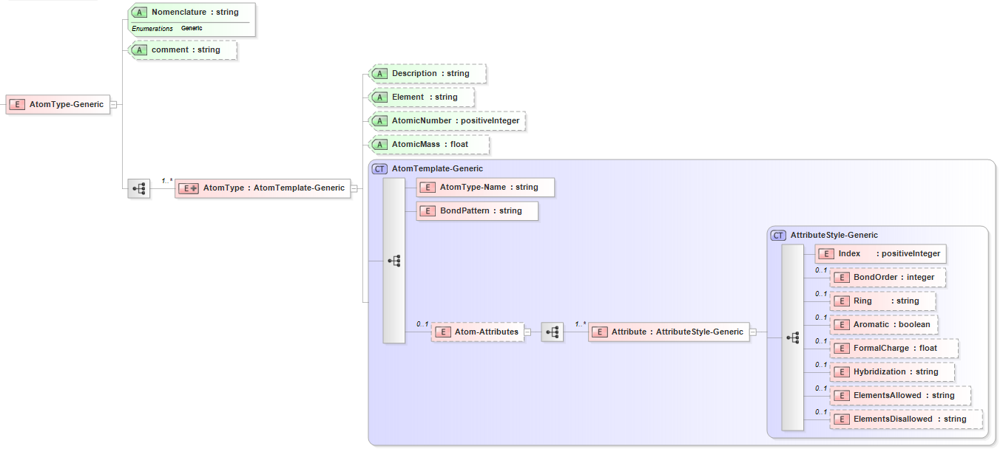

2.3. Atom Type - Generic¶
2.3.1. XML Schema¶
The XML schema for the Atom Type - Generic has the following representation (design mode representation using Liquid XML Studio):
The general attributes (describing the entire set of atoms) are given by:
General Attributes |
Cardinality |
Value/Definition |
Nomenclature |
Fixed |
Generic |
comment |
Optional |
Comment attached to set of atoms |
The specific attributes (attached to each atom description) are given by:
Specific Attributes |
Cardinality |
Value/Definition |
Description |
Required |
Description of the atom |
Element |
Required |
Corresponding element of the atom |
AtomicNumber |
Required |
Corresponding atomic number of the atom |
AtomicMass |
Required |
Corresponding atomic mass of the atom |
The specific elements (contained within each instance of the atom template) are given by:
Specific Elements |
Cardinality |
Value/Definition |
AtomType-Name |
Required |
Atom type name |
BondPattern |
Required |
Atom |
Index |
Required |
Index of atom entry |
BondOrder |
Optional |
Coordination of the atom |
Ring |
Optional |
Ringsize of the atom |
Aromatic |
Optional |
Aromatic (true/false) |
FormalCharge |
Optional |
Formal charge of the atom |
Hybridization |
Optional |
Hybridization of the atom |
ElementsAllowed |
Optional |
Elements allowed in the atom |
ElementsDisallowed |
Optional |
Elements disallowed in the atom |
Note that an XML document will be rejected from being entered into the WebFF database if a required attribute is left unspecified.